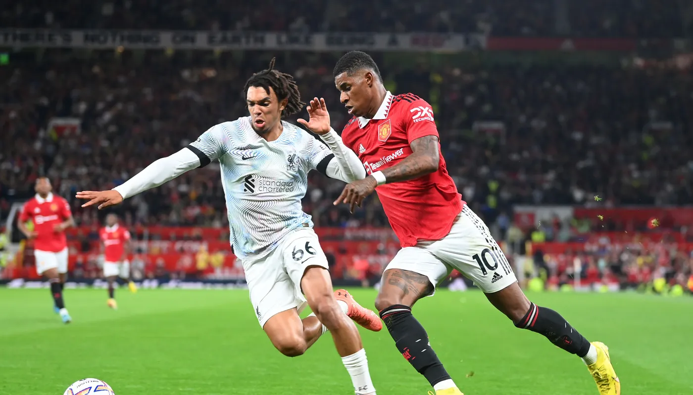

What we do?
The Premier League is the organising body of the Premier League with responsibility for the competition, its Rule Book and the centralised broadcast and other commercial rights.
We work proactively and constructively with our Member Clubs and the other football authorities to improve the quality of football, both in England and across the world.
The Premier League is all about the football
Watching fantastic players and exciting matches creates the support that drives the broadcast and the commercial interest that ensures we can re-invest in the game, both domestically and globally.
The best football
The principal objective of the Premier League is to stage the most competitive and compelling league with world-class players and, through the equitable distribution of broadcast and commercial revenues, to enable clubs to develop so that European competition is a realistic aim and, once there, they are playing at a level where they can compete effectively.
Many of the most famous clubs in world football play in the Premier League and, thanks to our distribution model, which is the most equitable in top-flight European football, the League is incredibly competitive, unpredictable and exciting.
In recent seasons, the battles for the title, UEFA Champions League places and to avoid relegation have been the tightest and hardest fought on record.
Some of the biggest names in world football play in the Premier League every week: from Harry Kane to Erling Haaland, Mohamed Salah to Martin Odegaard, David De Gea to Virgil van Dijk. The world’s best players come to England to play in a compelling league competition, in front of passionate full houses and matches that are seen all over the world.
The global stars attracted to the Premier League help raise the playing standards of young English talent such as Phil Foden, Bukayo Saka, Jordan Pickford, Trent Alexander-Arnold and Marcus Rashford.
Our clubs are producing excellent players, who take their place alongside the international superstars on merit.
Global phenomenon
The Premier League is the world’s league. It has become a global phenomenon, inspiring passion and emotion from Los Angeles to Lagos, from Macau to Melbourne.
It has become a league of nations on the pitch, too. In 1992 there were only 11 non-British or Irish footballers in the Premier League. These days there are, on average, about 70 nationalities running on to the pitch in the Premier League.
A strong domestic league has been beneficial in Europe, too. When the Premier League was formed in 1992, England was 13th in the UEFA Association Coefficient table. A decade later it had risen to third, the Premier League behind La Liga and Serie A, who between them were in the middle of a 16-year period at the top of European football.
Since then, the Premier League has been in the top three of the Coefficient standings with strong performances in Europe from established UEFA performers.
Central to the continued progress of the Premier League, and the wider English game, is the Elite Player Performance Plan (EPPP), which was produced by the Premier League after consulting representatives of the Football League and The FA.
The EPPP is a long-term plan that promotes the development of a world-leading Academy system, with the aim of producing more, and better, Home Grown Players.
The Premier League and its Clubs are committed to generating domestic talent, with more than 95 per cent of young players in training being British.
It will be this talent, developed through the EPPP, which will see some of the best prepared world-class players taking part in what will be most competitive and compelling league in football.